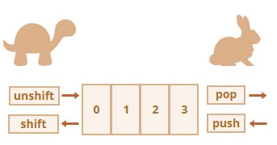

<!-- 배열 Array -->
<html>
  <style>
    .lines {
      margin: 40;
    }
    details {
      padding-bottom: 1em;
    }
    details p {
      color: rgb(0, 160, 160);
      padding-left: 1em;
    }
    .red {
      color: red;
    }
  </style>
</html>
<body>
  <div class="lines">
    <details>
      <summary>순서가 있는 컬렉션을 저장할 떄 쓰는 객체,자료구조는?</summary>
      <p>배열 Array<br>배열의 본질은 객체이다.</p>
    </details>
    <details>
      <summary>위의 것 선언방법 두가지</summary>
      <p><span class="red">let arr=[ ]</span><br />let arr=new Array( );이건잘안씀</p>
    </details>
    <details>
      <summary>배열은 인덱스넘버가지고 수정 가능?</summary>
      <p>
        YES <br />let fruits = ["사과", "배", "포도"];<br />
        fruits[4] = "복숭아"; // ['귤', '배', '포도', empty, '복숭아']
      </p>
    </details>
    <details>
      <summary>
        배열Array속 요소는 자료형의 제약이 없을까요? <br />즉, 객체{:},
        function(){}이 올 수 있을까요???
      </summary>
      <p>
        YES.제약없음<br />
        let arr = [<br />
        "사과",<br />
        { name: "이보라" },<br />
        true,<br />
        function () { console.log("안녕하세요."); },<br />
        ];
      </p>
    </details>
    <details>
      <summary class="red">맨 뒤 빼기, 추가</summary>
      <p>
        뒤 빼기 <span class="red">배열변수.pop()</span><br />뒤 추가
        <span class="red">배열변수.push()</span>
      </p>
    </details>
    <details>
      <summary class="red">맨 앞 빼기, 추가</summary>
      <p>
        앞 빼기 <span class="red">배열변수.shift()</span> 제일 앞 요소를 꺼내
        제거한 후 남아있는 요소들을 앞으로 밀어줍니다. 이렇게 하면 두 번째
        요소가 첫 번째 요소가 됩니다.<br />앞 추가
        <span class="red">배열변수.unshift()</span>
      </p>
    </details>
    <details>
      <summary>임의의 키를 사용해야 한다면 배열? 일반 객체 {:}?</summary>
      <p>배열보단 일반 객체 {:}가 적합한 자료구조</p>
    </details>
    <details>
      <summary>성능은 뭐가 빠를까요?? push,pop VS shift,unshift</summary>
      <p></p>
    </details>
    <details>
      <summary>배열 일일이 타자치기 귀찮다! 배열 빨리 만드는 방법은????</summary>
      <p>배열 빨리 만드는 방법: 문자열 → .split()<br>let arrr="사과 배 포도".split(" ");</p>
    </details>
    <details>
      <summary>for반복문과 for..of반복문의 차이</summary>
      <p>for문에 들어가는 매개변수인 i 의 값이 다르다. for반복문은 인덱스넘버, for..of는 요소자체<br>
         for (let i=0; i&lt;arrr.length; i++) //여기서 i는 인덱스넘버
         <br> for (let i of arrr) //여기서 i는 요소자체
      </p>
    </details>
    <details>
      <summary>length 프로퍼티의 또 다른 독특한 특징</summary>
      <p>자르고,쓰고,비울수 있다.</p>
    </details>
    <details>
      <summary></summary>
      <p></p>
    </details>
        <details>
      <summary></summary>
      <p></p>
    </details>
        <details>
      <summary></summary>
      <p></p>
    </details>
        <details>
      <summary></summary>
      <p></p>
    </details>
        <details>
      <summary></summary>
      <p></p>
    </details>
  </div>
  <script>
    //배열은 인덱스넘버가지고 수정 가능
    //아까 문자열은 수정 안되었지만..
    let fruits = ["사과", "배", "포도"];
    fruits[0] = "귤"; //['귤', '배', '포도']
    console.log(fruits);

    //물론 추가도 가능하지요
    fruits[4] = "복숭아"; // ['귤', '배', '포도', empty, '복숭아']
    console.log(fruits);

    //length 프로퍼티 사용하면 몇개인지 알 수 있음
    console.log(fruits.length);

    //배열Array속 요소는 자료형의 제약이 없다.
    let arr = [
      "사과",
      { name: "이보라" },
      true,
      function () {
        console.log("안녕하세요.");
      },
    ];
    console.log(arr[1].name); //1요소(객체)의 name프로퍼티 출력
    arr[3](); //3요소(함수) 실행

    //배열요소 마지막에 ,로 끝낼 수 있음( 객체와마찬가지 )
    // (trailing이라고 함)
    //장점: 마지막 쉼표 사용하면 모든 줄의 생김새가 유사해서 요소 넣거나 빼기 쉬움
    let trailling = ["사과", "오렌지", "자두"];


    //1. for 반복문을 써보자
    //배열빨리 만드는방법: 문자열 → .split()
    let arrr="사과 배 포도".split(" ");
    console.log(arrr); 
    for (let i=0;i<arrr.length;i++){//let안해주면 전역변수되버림
        console.log(arrr[i],i);
    }
    //2. for..of 반목문
    for(let i of arrr){
        console.log(i); //위는인덱스, 얘는 요소자체
    }


    //length 프로퍼티로 자르고,쓰고,비울수 있다.
    //( length 프로퍼티의 또 다른 독특한 특징임 )
    let arrL=[1,2,3,4,5]
    //요소 두개만 남기고 자른단
    arrL.length=2;
    console.log(arrL); //[1, 2]
    //회복이 될까?
    arrL.length=5;
    console.log(arrL); //[1, 2, empty × 3] 나머지값 사라지고 empty~  
    //비워버령
    arrL.length=0;
    console.log(arrL); //[]

  </script>
  
</body>
